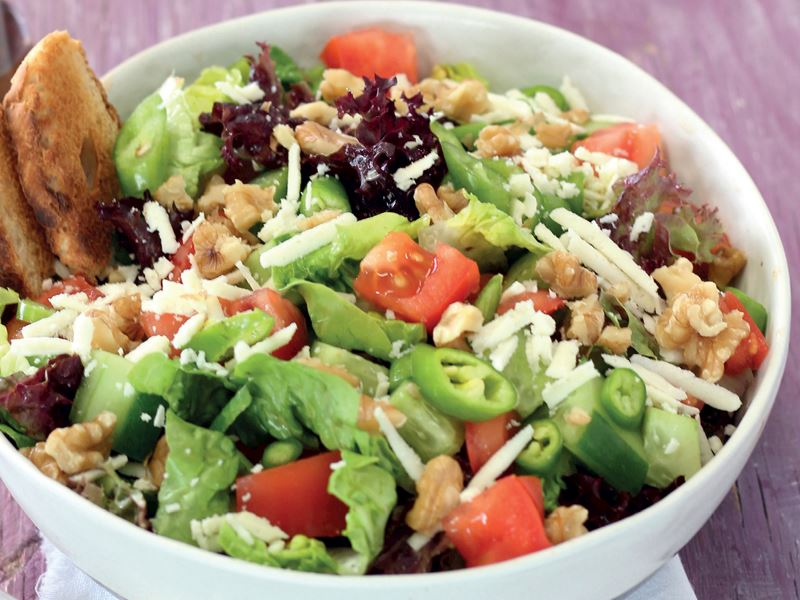

Cevizli Salata Tarifi
Malzemeler
- 3-4 adet Domates
- 2 adet Sivri Biber
- 1 adet Soğan
- 1 avuç Maydonoz
- 1 çay bardağı iri çekilmiş Ceviz İçi
- 4-5 yemek kaşığı Zeytinyağı
- 1 çay kaşığı Tuz
- 2 yemek kaşığı Nar Ekşisi
Nasıl Yapılır ?
Tüm malzemeleri küçük küpler halinde doğruyoruz.
Bir kasede karıştırıyoruz.
İri çekilmiş ya da doğranmış cevizi de ekliyoruz.
Tuz, nar ekşisi, zeytinyağını arzunuza göre ekleyin.
Karıştırın. Servis kasesine alın. Afiyet olsun.